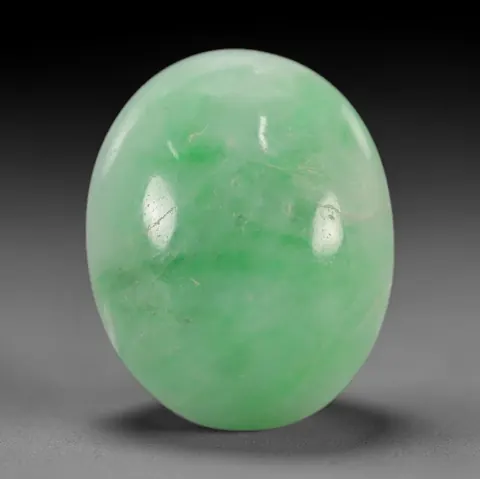

翡翠選購五步：種水色工藝證書
買翡翠像相親——先看種水（氣質）、再看色（顏值）、後查證書（身家），五步走完，才不會見光死。

核心定義
翡翠選購的完整框架：種（結構細密）、水（透明度）、色（濃豔正陽均）、工（雕工鑲工）、證（權威證書）——五步缺一不可。種水是基礎、色是顏值、工藝是靈魂、證書是安全網。
實戰順序建議：先看種水（一眼可辨的基礎），再看色（自然光下），後查工藝（雕工是否糟蹋料），最後核證書（處理與身分）——證書不是最後的裝飾，是風險的最後防線。
特徵與分類
| 步驟 | 檢查重點 | 陷阱 |
|---|---|---|
| 種 | 結構細密、透亮 | 豆種稱老種 |
| 水 | 通透靈動 | B貨假水頭 |
| 色 | 正濃陽均 | C貨染色 |
| 工藝 | 雕工流暢 | 廢料多、工差 |
| 證書 | 權威機構 | 來路不明的證書 |
「工藝」常被忽略：好料配好工是增值，好料配壞工是糟蹋（廢料多、線條粗）；雕件要看「留料」——滿綠大面積雕刻比鏤空挖料更保值。證書則要看發證機構與標示完整（A/B/C、處理揭露）。
科學原理
種水的評估要在標準光源（自然光/白光）下：黃燈讓翡翠「顯暖顯透」，會誤導水頭判斷；觀察「瑩光」與「膠感」是種老的訊號。色的評估要在自然光下看「正濃陽均」四要素。
證書的科學：權威實驗室（GIA、國檢等）用折射儀、比重、光譜、顯微鏡做全面檢測——它是唯一能定論「A/B/C 貨與礦物身分」的終審。證書真偽也可上官方查詢系統驗證。
鑑定與鑑別方法
- 自然光下看種水色
- 十倍放大鏡查結構與處理痕跡
- 查雕工：線條、留料、比例
- 核證書：機構、編號、處理標示
- 官方系統查證書真偽
市場行情與保養建議
行情指南：預算內先定「種水優先」或「色優先」路線；糯種帶翠是性價比甜蜜點、冰種陽綠是收藏主流、玻璃種帝王綠是天花板。近年「種水派」崛起，冰種無色掛件受年輕人喜愛。
最終建議：翡翠是戴一輩子的物件——買你真心喜歡、看得懂的那塊。五步框架是理性護航，最後的決策，交給你的審美。
常見誤區
翡翠市場的坑（B/C 貨、仿品、產地）都在細節裡——證書是唯一可靠的驗證。沒證書的翡翠，風險自己扛。
複雜雕工可能是「遮瑕」（掩蓋裂紋與雜質）——好料常留大面素面，工藝的價值在「巧」，不在「繁」。
冷知識
素面（如蛋面、平安扣）無法藏瑕——敢留素面的，都是種水色俱佳的好料。簡約，反而是最高級的炫富。
同一塊原石切出的成套翡翠（如耳環對、套鍊）價值遠超單件——同料是稀缺性的疊加。
反直覺觀點
繁複雕工常是遮瑕的手段——裂紋與雜質被雕掉。素面蛋面敢見光，是料好的證明。工藝的繁，有時是料的遮羞布。
先被「一眼鐘情」衝昏頭、後補證書，是踩雷的標準流程——理性護航在前，審美才能在安全區內盡情。